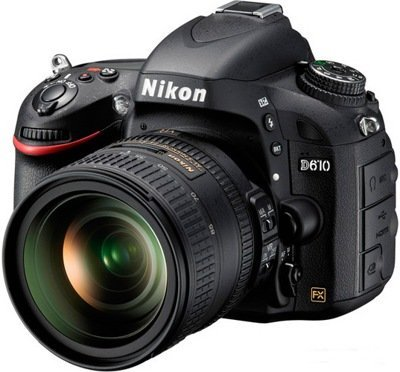

luckyday
Зеркальный фотоаппарат
Nikon D610 KIT 24-85mm VR

Описание
- Длина: 113 мм
- Ширина: 141 мм
- Толщина: 82 мм
- Вес: 850 г
- Материал корпуса: металл (магниевый сплав)
- Размер экрана ЖКИ: 3.2"
- Количество пикселей: 24.3 Мп
- Максимальное разрешение видео: 1920 x 1080
- Размер матрицы: Full frame (35.9 x 24 мм - FX Nikon)
- Поддержка карт памяти: SD, SDHC, SDXC
- Тип питания: Li-ion аккумулятор
Комплект поставки:
- Защитная крышка: Да
- Ремешок: Да
- Фотоаппарат: Да
- Зарядное устройство: Да
- Аккумулятор: Да
- CD с программным обеспечением: Да
- Инструкция: Да
Официальная гарантия в Минске: 24 мес.
Все права защищены ©